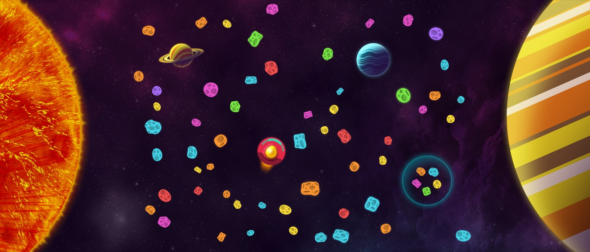
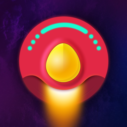
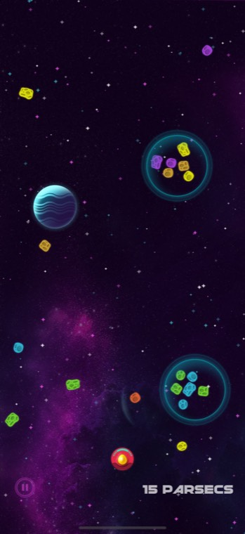
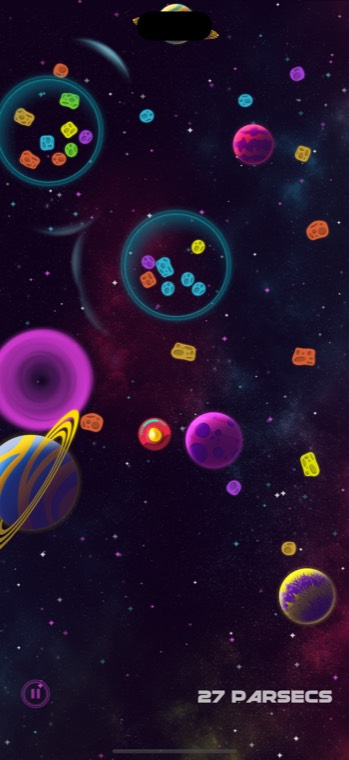
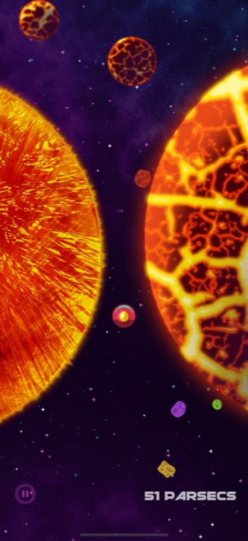
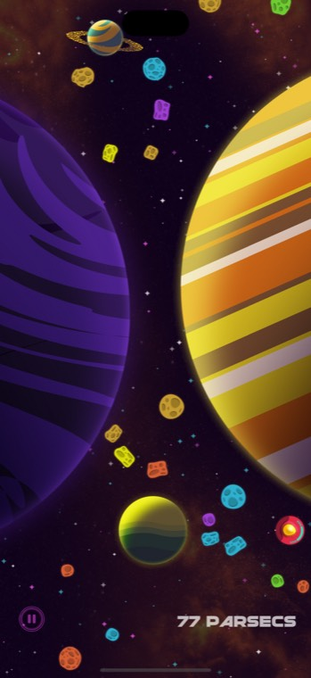
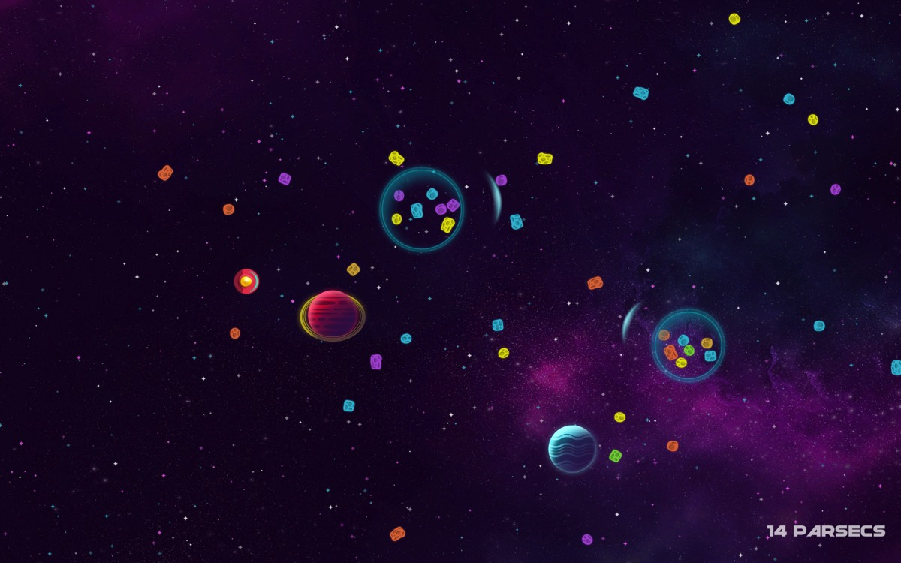

A physics-based space flight through ever-harder fields of asteroids, planets, suns and black holes. How far can you go?
Parsecs is a revival of the original iOS game of the same name, rebuilt from the ground up for every Apple device. You flick or drag anywhere to send your ship flying, and each parsec you cross brings a new field: drifting asteroids, planets to bounce off, suns that burn whatever touches them, black holes that pull everything in, and space bubbles that burst their swarm of asteroids when you pop them.
XP from every run buys upgrades: shields that take a hit for you, space mines to clear the way and a holster to fire them yourself, a warp drive that starts each run deeper into space, and Recurrence, an extra life that carries a run on from the parsec it ended. Past The Edge of Space, stranger upgrades are waiting for the pilots who get there.
The game balances its field for whatever screen it is on, so a run on an iPhone plays the same as a run on an iPad or a Mac display.
The classic run. Fly as far as you can; every parsec is harder than the last.
Fields of nothing but space bubbles. Distance doesn't count here, only bubbles popped, and the far edge stays closed until every one in the field is gone.
A calm flight through space with nothing that can hurt you: planets and empty bubbles, at your own pace.
Pilots who reach The Edge of Space find something ominous waiting past it, and upgrades no one else has seen. Some secrets are for players to discover.





Challenge friends on Best Run, Furthest and Bubble Run, and jump straight into a run from the Games app with Fly a Run and Bubble Run. Pilots who reach The Edge of Space unlock more challenges and an activity of their own.
iPhone, iPad and Mac, plus iPhone Duo on both its screens. One Game Center for all of them: achievements and leaderboards are shared across the iOS and Mac apps.
Fly with any game controller: aim with the sticks, fire mines with the buttons, and every menu works from the pad.
Reduce Motion on every platform: the warp, the parallax stars and the quantum glitches hold still, and the quantum wave's static calms down. Warning effects stay inside photosensitivity limits for everyone. On iPhone and iPad the reading text grows with the system text size, and haptic taps mark bubbles, shield hits, mines and crashes for players who play muted.
No forced ads, ever. An optional ad doubles a run's XP; Support Developer does it for every run and unlocks custom colors. Ads are only personalized if the player says yes.
Pauses itself when you switch apps, pull down Notification Center or take a call, and syncs progress through iCloud.
Review codes, high-resolution screenshots, App Previews and logos on request.
kevin@gracefulgames.net